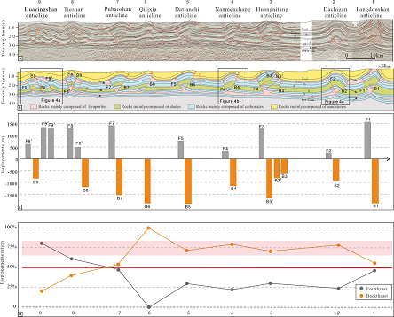
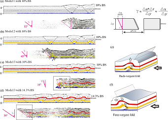
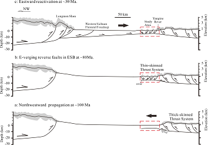

本文揭示了多滑脱层对川东薄皮褶皱冲断带构造倾向的影响及其演化。在川东薄皮褶皱构造中发育一系列后倾为主的滑脱褶皱，这在自然界中十分罕见，并且无法用经典临界楔体理论解释。本文设计了三个离散元数值模拟实验，探讨多滑脱对川东薄皮褶皱构造倾向和演化的影响。实验结果表明，多套滑脱层有利于形成反冲为主的对冲逆冲褶皱楔。上覆滑脱层的增加影响了褶皱楔的构造倾向和断层活动，实验结果在构造倾向和断层活动方面与川东褶皱带的结构相似，表明川东盆地内部薄弱层的分布对其影响不容忽视。基于以上模拟结果，本文提出了川东褶皱带耦合地球动力学过程的运动学模型。 (Xu et al.,2024)。
Xu, W., Yin, H.*, Zhao, S.,Zhang, C., Li, B., Jia, D., Li, C., Wang, W., 2024. Influence of multiple detachments on structural vergence and evolution of the thin-skinned fold-and-thrust belt in the eastern Sichuan Basin: Insights from numerical modeling,Journal of Structural Geology,180:105068.题目
Influence of multiple detachments on structural vergence and evolution of the thin-skinned fold-and-thrust belt in the eastern Sichuan Basin: insights from numerical modeling
Wenqiao Xu1, Hongwei Yin1*,Shengxian Zhao2, Chenglin Zhang2, Bo Li2, Dong Jia1, Changsheng Li3 and Wei Wang1
- School of Earth Science and Engineering, Nanjing University, Nanjing, China
- Shale Gas Institute of PetroChina Southwest Oil & Gasfield Company, Chengdu, China.
- School of Earth Sciences, East China University of Technology, Nanchang, China.
摘要
The thin-skinned fold-and-thrust belt with multiple detachments in the eastern Sichuan Basin is characterized by a series of fault-detachment folds with a backward preferred structural vergence, which is rare in nature and can’t be explained well by the classic critically taper theory. Here, three discrete element simulations were conducted to study the influence of multiple detachments on the structural vergence and evolution of the eastern Sichuan thin-skinned fold and thrust belt. The experimental results reveal that multiple detachment layers affected the bulk mechanical strength and facilitated a dually vergent thrust wedge with a backward preferred structural vergence. The addition of intermediate detachment layers influences structural vergence and fault activity of thrust wedges. With the increase in intermediate weak layers, the preferred structural vergence of these model results progressively moved from forward to nearly symmetric and eventually to backward. These results exhibit first-order structural similarities to the structural vergence and fault activity in the eastern Sichuan fold and thrust belt, which indicates that the influence of the internal distribution of weak layers within the eastern Sichuan Basin should not be ignored. The limited Cambrian evaporite layer and the widespread Silurian shale and Lower-Middle Triassic evaporite layers had significant impacts on the deformation of the fold-and-thrust belt in the eastern Sichuan basin. Consequently, we propose a kinematic model for the coupled geodynamic processes of the eastern Sichuan fold-and-thrust belt. The framework of the eastern Sichuan Basin with a number of backward fault-detachment folds was formed by Mesozoic northwestward propagation, and Cenozoic eastward propagation reactivated the folding and thrusting. The Huayingshan fault was affected by the limited Cambrian evaporite layer.

Interpreted seismic section (a) and corresponding geological cross-sectional view (b) across the ESB (modified from Gu et al., 2021), and its position is shown in Figure 1b. The black arrows illustrate the positions of the three detachments. © Fault displacement statistics within the anticlines across the ESB. The fault displacements record the displacement of Permian layer in faults that at least connect the basal and top detachment layers. The displacements of minor faults between adjacent detachment layers have been disregarded. (d) The ratio of forethrust/backthrust displacements to the total displacements within the anticlines.

Distribution of deformation (up) and velocity field (down) illustrated by (a) Model 1 with 10% BS, (b) Model 2 with 10% BS and © Model 3 with 10% BS and (d)14.3% BS, where γ is shear strain of the bulk overlying particles, Δt represents the period of time, Δu is the velocity between the upper surface and base, Δy represents the thickness of the particle layers, and Δx represents surface-bottom interface offset of particle motions. γ1-γ4 are measured by the angle of pink dash lines. Velocity schematic diagrams of back-vergent fold (e) and fore-vergent fold (f) with multiple detachment, which are interpreted from the squares in velocity fields of Model 3 with 10% BS and 14.3% BS, respectively.
